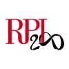
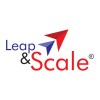

MRUNAL
ATHALEY
Junior at Rensselaer Polytechnic Institute
Dual B.S. in Computer Science and Information Technology and Web Science

❮
❯
Projects

RPI Cinema
Role: Developer
Duration: Sep 2022 - Dec 2022
About: Developed a website for consolidating movie screening data on campus using HTML, CSS, JavaScript, PHP, and MySQL. Presented the project to classmates and the professor.
❮
❯
Experiences
Software IT Technologies Intern
NYISO · Internship
May 2024 - Present
- Penetration Testing: Discovered an XSS vulnerability in a web application and authored a security report about it.
- API Development: Created two GET API endpoints for an upload/download bidding system using Spring Boot and Java, adhering to Agile methodologies.
- Data Grid Component: Developed a custom React data grid component.
- Presented a poster detailing internship activities and engaged in Q&A sessions to explain project outcomes and methodologies.

Help Desk Consultant
Voorhees Computing Center · Part-time
Sep 2022 - Present
- Interacting with students, staff, and faculty by phone, email, or in-person to provide technical support.
- Diagnosing and resolving software and hardware issues.

Summer Intern
Leap & Scale · Internship
May 2019
- Worked with a team on the project ideation of IoT-based swim gear with an app component to track health stats.
- Gained experience in IoT technology and cloud computing.
Summer Intern
Infosys · Internship
May 2018
- Acquired experience in HTML, CSS, JavaScript for web development.
- Led a team of interns to develop a movie ticketing website, winning a second-place award for the project.